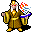
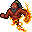
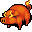

ファイアボール Fireball
英語版 CrawlWiki の記事「Fireball」(0.30 向け、2023-09-10 版)の翻訳です。原文の著者は編集履歴をご覧ください。
この記事は 0.30 の時点の内容で、最新の 0.34 とは違うところがあるかもしれません。
| | |
|---|---|
| レベル | 5 |
| 系統1 | 妖術 |
| 系統2 | 炎の魔術 |
| 入手元 | ドラゴンの魔法書 天球の魔法書 |
| 詠唱の騒音 | 5 |
| 呪文の騒音 | 15 |
| 威力の上限 | 200 |
| 射程 | 5 |
| フラグ | 方向・対象指定(Dir or target)、射線の確認が必要(Needs tracer) |
| 爆発する火の玉を投げつける。 |
| 呪文の詳細 | |
|---|---|
| ダメージの式 | 3d(3.33+Power/6) 火炎 |
| 最大ダメージ | 3d37 |
| 最大威力 | 200 |
| 射程 | 5 |
| 狙い方 | ビーム |
| 命中 | |
| 特殊 | 爆発 |
ファイアボールはレベル 5 の妖術/炎の魔術の呪文だ。狙ったマスに爆発する炎の塊を撃ち込み、続いて起こる 3×3 の爆発に巻き込まれたものすべてに、避けられない火炎のダメージを与える。この爆発は視界の外にいるモンスターにも当たる。
戦略
ファイアボールは中盤の攻撃呪文として優秀だ。ダメージは星の炸裂に劣るが、必ず命中し、斜めにも撃てて、呪文のレベルも低い(つまり MP のコストも少ない)。EV を無視するので、スプリガンや殺人蜂のような、攻撃の当てにくい厄介な敵によく効く。
モンスターの動き方のくせを覚えれば、1 発のファイアボールで一度に 8 体のモンスターに当てることもできる。守りが十分なら、ダメージを最大にするためや、戦いの途中で MP が尽きないようにするために、あえて 1、2 発殴られるのもありだ。
小技
- ファイアボールの爆発は、視界の外のマスからでも当たる。(ヴェフメットの助けがあっても)ふつうの視界の半径より先には届かないが、角の向こうや霧の向こうの相手を狙うのに使える。
- 近接攻撃の間合いにいる相手に撃つのは危ない。戦っている敵の後ろのマスを狙おう。そうしないと自分もファイアボールを食らう。
- 敵が 1 体だけなら、相手の斜め後ろのマスを狙えば自分には当たらない。下の図を参照。
......... ......... ...###... ....###.. ...#*#... ....#*#.. ...##Y... ....Y##.. ....@.... ....@.... ......... .........
* = 狙うマス
モンスター版
モンスター版もプレイヤー版とほぼ同じように働く。
ファイアボールを唱える敵は次のとおり。
- R
 アズラエル(ダメージ 3d20)
アズラエル(ダメージ 3d20) - 2
 バルログ(ダメージ 3d23)
バルログ(ダメージ 3d23) - e

闇エルフの精霊使い(ダメージ 3d23) - q
 ドラコニアンの焼却者(ダメージ 3d26)
ドラコニアンの焼却者(ダメージ 3d26) - R

イフリート(ダメージ 3d15) - O
 エロルカ(ダメージ 3d14)
エロルカ(ダメージ 3d14) - C
 炎の巨人(ダメージ 3d26)
炎の巨人(ダメージ 3d26) - h

地獄の豚(ダメージ 3d20) - @
 マージェリー(ダメージ 3d33)
マージェリー(ダメージ 3d33) - p
 オカルティスト(ダメージ 3d22)
オカルティスト(ダメージ 3d22) - *
 炎の球体(ダメージ 3d43)
炎の球体(ダメージ 3d43) - D
.png) 地獄のサーペント(ゲヘナ)(ダメージ 3d27)
地獄のサーペント(ゲヘナ)(ダメージ 3d27)


変更履歴
- 0.20 より前は、ファイアボールをもとにした遅延式ファイアボールという呪文があった。ふつうのファイアボールを覚えていれば、呪文レベル 2 ぶんだけで覚えられた。仕組みはふつうのファイアボールと同じだが、あとで使うためにためておけた。